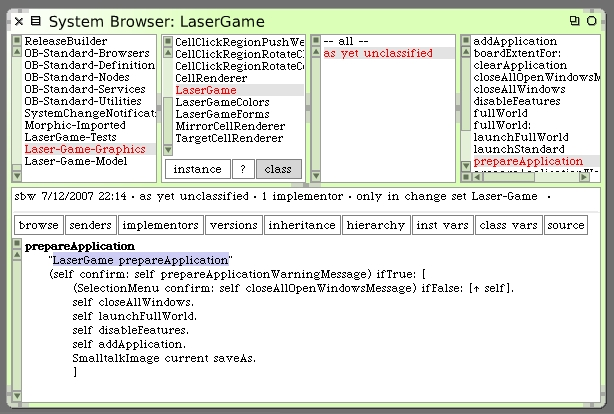
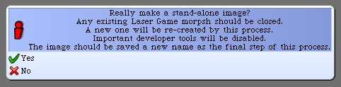
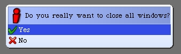
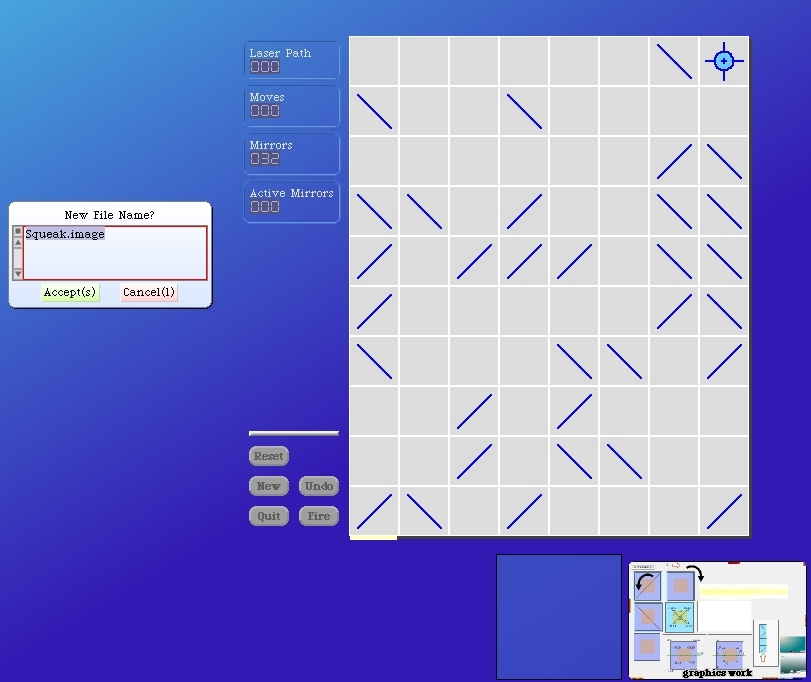
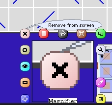
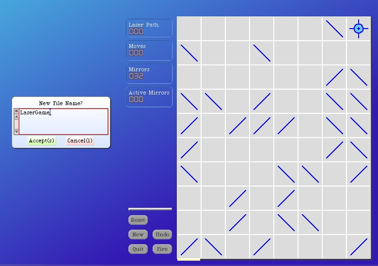

Afterwards, save your development image before we execute anything else. I prefer to leave the hierarchy browser open with the LaserGame class method #prepareApplication showing.
So what will this do?
The first thing that we will do is post the warning message about the following steps of execution. Then assuming the developer wants to resume we ask a second question; asking if it's okay to close all open windows. This gives us two "outs" before we are committed to disabling features, launching our full-world laser game morph, registering the class for startup and saving a new second image for deployment.
Now select the code "LaserGame prepareApplication" and execute. The first thing we should see is our little confirmation dialog warning us about the process we are about to perform.
Click "Yes" and we will get the follow-on message about open windows.
Once again click "Yes". Our Squeak environment should change to having the gradient blue background and our Laser Game should be visible.
Before I typed in the name of the new deployment image, I noticed that there are some morphs left over from my development work. I want to close them before I continue. Just command-click on these objects and then click on the "X" to delete each one.
Once all morphs except for the Laser Game itself and the prompt image name dialog window are closed we can continue. Enter the name LaserGame in the dialog window.
After Squeak writes out the new image, exit without saving from the existing image.